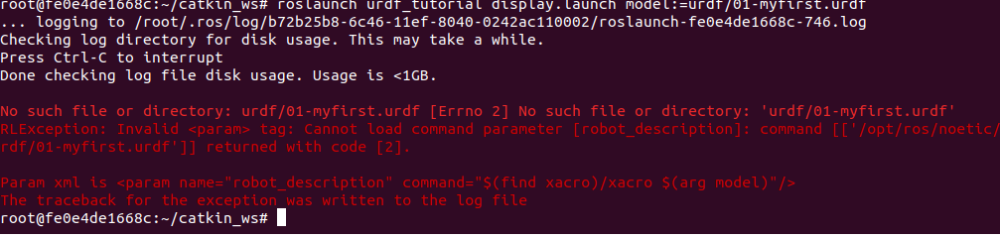
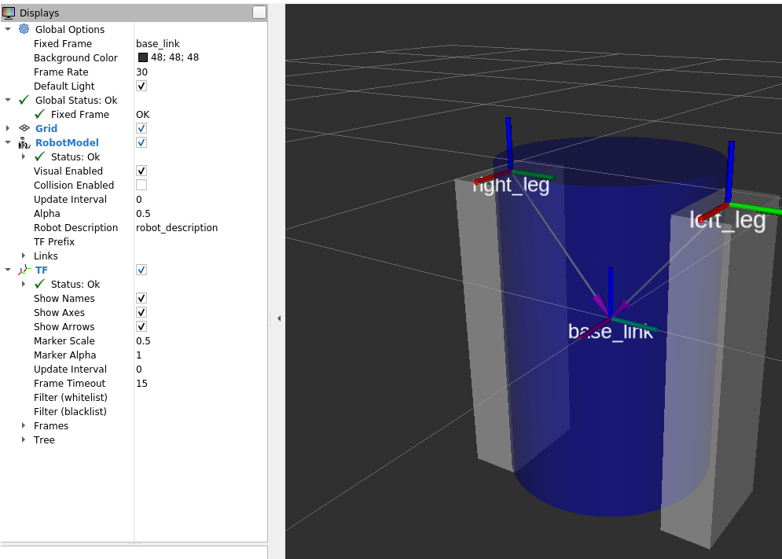

Cуществует два стандарта описания роботов: .sdf и .urdf; первый является более новым и более удобным для использования, поэтому большинство объектов на данный момент существует именно в формате .sdf.
В Сурцуков М.М. Вводное руководство по работе с Gazebo , М робот описывается с помощью sdf-файла, как написано близкого родственника urdf-формату.
sdf-файлы пишутся на языке xml (с помощью тегов).
Описание тегов sdf-формата на официальной странице SDFormat.
Тэг link определяет базовый структурный элемент, их может быть несколько в одной модели.
Внутри тэга link тэги:
Название xacro происходит от XmlmACROs. Это простая утилита, однако,она существенно помогает в создании сложных xmlфайлов в том числе sdfи urdf. Xacro позволяет импортировать один sdfфайл в другой, определять переменные, создавать макросы, производить не сложные арифметические вычисления и т.д.
URDF (Unified Robot Description Format) — это XML-формат, используемый для описания всех аспектов робототехнических систем в ROS. Он описывает физические свойства модели, включая размеры, форму, материалы, а также динамические и кинематические аспекты. URDF обычно используется для статических и неизменяемых описаний.
XACRO - язык, облегчающий разработку urdf-файлов.
Ссылки: ros_xacro
XACRO является расширением URDF и предоставляет возможность создавать более чистые и модульные описания, используя макросы XML для упрощения и повторного использования кода. XACRO улучшает управляемость и поддержку сложных файлов URDF, что делает его идеальным для больших робототехнических систем.
SDF (Simulation Description Format) — это формат, разработанный специально для описания объектов и сред, используемых в симуляционных программах типа Gazebo. В отличие от URDF, SDF поддерживает описание не только роботов, но и целых сред, динамических свойств объектов, освещения, физики и других аспектов, что делает его особенно подходящим для комплексных симуляций.
Ссылки: SDF на сайте Gazebo
Примеры моделей SDF
Инструменты:
Инструмент командной строки check_urdf пытается проанализировать файл как описание URDF и либо выводит описание результирующей кинематической цепи, либо сообщение об ошибке.
Например, чтобы запустить этот инструмент в pr2 urdf, сначала создайте файл urdf, выполнив:
rosrun xacro xacro.py `rospack find pr2_description`/robots/pr2.urdf.xacro -o /tmp/pr2.urdf
Затем запустите проверку, выполнив команду:
rosrun urdfdom check_urdf /tmp/pr2.urdf
Visual Studio Code имеет расширение ROS, которое поддерживает визуализацию URDF.
Чтобы получить диаграмму graphviz вашего urdf-файла, выполните следующие действия:
urdf_to_graphiz pr2.urdf
Создание urdf-файла
RDF - это XML, который является текстовым форматом. Таким образом, вы можете создавать файлы в любом текстовом редакторе. Рекомендуется использовать IDE с хорошей поддержкой XML.
Если уже существует CAD-модель робота, есть несколько инструментов, которые можно использовать для преобразования CAD-модели в URDF.
Прежде чем продолжить, убедитесь, что у вас установлен пакет joint_state_publisher. Если вы установили urdf_tutorial с помощью apt-get, это уже должно быть сделано. Если нет, пожалуйста, обновите свою установку, чтобы включить этот пакет (используйте rosdep для проверки).
docker run --rm -it rosgazebo1 /bin/bash
roscd joint_state_publisher
Все модели роботов, упомянутые в этом руководстве (и исходные файлы), можно найти в пакете urdf_tutorial.
Сначала мы рассмотрим одну простую фигуру в файле 01-myfirst.urdf. Вот, пожалуй, самое простое, что вы можете сделать в формате urdf.:
Если перевести XML на английский, то это робот с именем myfirst, который содержит только одну link (также известную как part), визуальный компонент которой представляет собой цилиндр длиной 0,6 метра и радиусом 0,2 метра. Может показаться, что в этом простом примере типа “hello world” слишком много вложенных тегов, но, поверьте мне, это будет сложнее.
Чтобы изучить модель, запустите файл:
passwd
/etc/init.d/ssh start
В другом терминале:
ssh -X root@172.17.0.2
roslaunch urdf_tutorial display.launch model:=urdf/01-myfirst.urdf

Создаю папку для проектов (рабочую область):
mkdir -p ~/catkin_ws/src
cd ~/catkin_ws/
catkin_make
source devel/setup.bash
echo "source ~/catkin_ws/devel/setup.bash" >> ~/.bashrc
source ~/.bashrc
Проверил:
echo $ROS_PACKAGE_PATH
Всё верно: /root/catkin_ws/src:/opt/ros/noetic/share
Повторил: roslaunch urdf_tutorial display.launch model:=urdf/01-myfirst.urdf

Посмотрел содержимое ~/catkin_ws/src. Есть только turtlebot3_simulations, когда в /opt/ros/noetic/share лежит дохрена каталогов, правда turtlebot3_simulations почему-то нет. Может перезагрузка нужна?
Сохранил изменения в контейнере в новый образ rosurdf
docker commit fe0e4de1668c rosurdf
Закрыл все терминалы и по-новому:
docker run --rm -it rosurdf /bin/bash
passwd
/etc/init.d/ssh start
Другой терминал: ssh -X root@172.17.0.2
root@f9a1a97b3272:~/catkin_ws/src# ls CMakeLists.txt turtlebot3_simulationsСодержимое не изменилось. И roslaunch urdf_tutorial display.launch model:=urdf/01-myfirst.urdf, сообщение на команду не изменилось.
Нашёл ошибку, оказывается roslaunch надо выполнять из каталога urdf_tutorials. Об этом даже чуть ниже у меня написано из перевода документации.
roscd urdf_tutorial
root@f9a1a97b3272:/opt/ros/noetic/share/urdf_tutorial# roslaunch urdf_tutorial display.launch model:=urdf/01-myfirst.urdf
Команда делает три вещи.
Вам придется изменить все примеры строк roslaunch, приведенные в этих руководствах, если вы не запускаете их из расположения пакета urdf_tutorial.
Все равно непонятно, почему в src только один пакет turtlebot3_simulations, а где остальные?
Наверное в src находятся только пакеты пользователя.
На что следует обратить внимание:
fixed frame - это рамка преобразования, в которой расположен центр сетки. Здесь это рамка, определенная нашей единственной ссылкой, base_link.
По умолчанию начало визуального элемента (цилиндра) находится в центре его геометрии. Следовательно, половина цилиндра находится под сеткой.
09.09.2024:
docker run --rm -it rosurdf /bin/bash
passwd
/etc/init.d/ssh start
Другой терминал:
ssh -X root@172.17.0.2
roscd urdf_tutorial
cat urdf/02-multipleshapes.urdf
<?xml version="1.0"?>
<robot name="multipleshapes">
<link name="base_link">
<visual>
<geometry>
<cylinder length="0.6" radius="0.2"/>
</geometry>
</visual>
</link>
<link name="right_leg">
<visual>
<geometry>
<box size="0.6 0.1 0.2"/>
</geometry>
</visual>
</link>
<joint name="base_to_right_leg" type="fixed">
<parent link="base_link"/>
<child link="right_leg"/>
</joint>
</robot>
Обратите внимание, как мы определили прямоугольник размером 0,6 м х 0,1 м х 0,2 мroslaunch urdf_tutorial display.launch model:=urdf/02-multipleshapes.urdf
Обе фигуры пересекаются друг с другом, поскольку имеют одну и ту же исходную точку. Если мы хотим, чтобы они не пересекались, мы должны определить больше исходных точек.
Второй терминал подключить удалённо к контейнеру не разрешают, потому закрыл rviz и:
cat urdf/03-origins.urdf
<?xml version="1.0"?>
<robot name="origins">
<link name="base_link">
<visual>
<geometry>>
<cylinder length="0.6" radius="0.2"/>
</geometry>
</visual>
</link>
<link name="right_leg">
<visual>
<geometry>
<box size="0.6 0.1 0.2"/>
</geometry>
<origin rpy="0 1.57075 0" xyz="0 0 -0.3"/>
</visual>
</link>
<joint name="base_to_right_leg" type="fixed">>
<parent link="base_link"/>
<child link="right_leg"/>
<origin xyz="0 -0.22 0.25"/>
</joint>
</robot>
ДДавайте начнем с изучения происхождения сустава (joint). Оно определяется в терминах родительской системы отсчета. Таким образом, мы находимся на расстоянии -0,22 метра в направлении y (слева от нас, но справа относительно осей) и 0,25 метра в направлении z (вверх). Это означает, что исходная точка дочерней ссылки будет находиться вверху и справа, независимо от визуального тега (тег visual) исходной точки дочерней ссылки. Поскольку мы не указали атрибут rpy (roll pitch yaw), дочерняя система координат (child frame) по умолчанию будет иметь ту же ориентацию, что и родительская система координат (parent frame).
Теперь, если посмотреть на визуальное начало отрезка, то оно имеет смещение как по оси xyz, так и по оси rpy. Это определяет, где должен находиться центр визуального элемента относительно его начала координат. Поскольку мы хотим, чтобы нога была прикреплена вверху, мы смещаем начало координат вниз, установив смещение z равным -0,3 метра. И поскольку мы хотим, чтобы длинная часть ноги была параллельна оси z, мы поворачиваем визуальную часть PI/2 вокруг оси Y.
roslaunch urdf_tutorial display.launch model:=urdf/03-origins.urdf

Файл запуска запускает пакеты, которые будут создавать TF-фреймы для каждой link в вашей модели на основе вашего URDF. Rviz использует эту информацию, чтобы определить, где отображать каждую фигуру.
Если TF-кадр не существует для данной link URDF, то он будет помещен в начало координат белым цветом
Код urdf/04-materials.urdf:
<?xml version="1.0"?>
<robot name="materials">
<material name="blue">
<color rgba="0 0 0.8 1"/>
</material>
<material name="white">
<color rgba="1 1 1 1"/>
</material>
<link name="base_link">
<visual>
<geometry>
<cylinder length="0.6" radius="0.2"/>
</geometry>
<material name="blue"/>
</visual>
</link>
<link name="right_leg">>
<visual>
<geometry>
<box size="0.6 0.1 0.2"/>
</geometry>
<origin rpy="0 1.57075 0" xyz="0 0 -0.3"/>
<material name="white"/>
</visual>
</link>
<joint name="base_to_right_leg" type="fixed">
<parent link="base_link"/>
<child link="right_leg"/>
<origin xyz="0 -0.22 0.25"/>
</joint>
<link name="left_leg">
<visual>
<geometry>
<box size="0.6 0.1 0.2"/>
</geometry>
<origin rpy="0 1.57075 0" xyz="0 0 -0.3"/>
<material name="white"/>
</visual>
</link>
<joint name="base_to_left_leg" type="fixed">
<parent link="base_link"/>
<child link="left_leg"/>
<origin xyz="0 0.22 0.25"/>
</joint>
</robot>
Корпус теперь синий. Мы определили новый материал под названием “blue”, для которого красный, зеленый, синий и альфа-каналы определены как 0,0, 0,8 и 1 соответственно. Все значения могут находиться в диапазоне [0,1]. Затем на этот материал ссылается визуальный элемент base_link. Аналогично определяется белый материал
Можно также тег material определять внутри тега visual и даже ссылаться на него в других links.
Вы также можете использовать текстуру, чтобы указать файл изображения, который будет использоваться для раскрашивания объекта.
roslaunch urdf_tutorial display.launch model:=urdf/04-materials.urdf

Код urdf/05-visual.urdf:
<?xml version="1.0"?>
<robot name="visual">
<material name="blue">
<color rgba="0 0 0.8 1"/>
</material>
<material name="black">
<color rgba="0 0 0 1"/>
</material>
<material name="white">
<color rgba="1 1 1 1"/>
</material>
<link name="base_link">
<visual>
<geometry>
<cylinder length="0.6" radius="0.2"/>
</geometry>
<material name="blue"/>
</visual>
</link>
<link name="right_leg">
<visual>
<geometry>
<box size="0.6 0.1 0.2"/>
</geometry>
<origin rpy="0 1.57075 0" xyz="0 0 -0.3"/>
<material name="white"/>
</visual>
</link>
<joint name="base_to_right_leg" type="fixed">
<parent link="base_link"/>
<child link="right_leg"/>
<origin xyz="0 -0.22 0.25"/>
</joint>
<link name="right_base">
<visual>
<geometry>
<box size="0.4 0.1 0.1"/>
</geometry>
<material name="white"/>
</visual>
</link>
<joint name="right_base_joint" type="fixed">
<parent link="right_leg"/>
<child link="right_base"/>
<origin xyz="0 0 -0.6"/>
</joint>
<link name="right_front_wheel">
<visual>
<origin rpy="1.57075 0 0" xyz="0 0 0"/>
<geometry>
<cylinder length="0.1" radius="0.035"/>
</geometry>
<material name="black"/>
<origin rpy="0 0 0" xyz="0 0 0"/>
</visual>
</link>
<joint name="right_front_wheel_joint" type="fixed">
<parent link="right_base"/>
<child link="right_front_wheel"/>
<origin rpy="0 0 0" xyz="0.133333333333 0 -0.085"/>
</joint>
<link name="right_back_wheel">
<visual>
<origin rpy="1.57075 0 0" xyz="0 0 0"/>
<geometry>
<cylinder length="0.1" radius="0.035"/>
</geometry>
<material name="black"/>
</visual>
</link>
<joint name="right_back_wheel_joint" type="fixed">
<parent link="right_base"/>
<child link="right_back_wheel"/>
<origin rpy="0 0 0" xyz="-0.133333333333 0 -0.085"/>
</joint>
<link name="left_leg">
<visual>
<geometry>
<box size="0.6 0.1 0.2"/>
</geometry>
<origin rpy="0 1.57075 0" xyz="0 0 -0.3"/>
<material name="white"/>
</visual>
</link>
<joint name="base_to_left_leg" type="fixed">
<parent link="base_link"/>
<child link="left_leg"/>
<origin xyz="0 0.22 0.25"/>
</joint>
<link name="left_base">
<visual>
<geometry>
<box size="0.4 0.1 0.1"/>
</geometry>
<material name="white"/>
</visual>
</link>
<joint name="left_base_joint" type="fixed">
<parent link="left_leg"/>
<child link="left_base"/>
<origin xyz="0 0 -0.6"/>
</joint>
<link name="left_front_wheel">
<visual>
<origin rpy="1.57075 0 0" xyz="0 0 0"/>
<geometry>
<cylinder length="0.1" radius="0.035"/>
</geometry>
<material name="black"/>
</visual>
</link>
<joint name="left_front_wheel_joint" type="fixed">
<parent link="left_base"/>
<child link="left_front_wheel"/>
<origin rpy="0 0 0" xyz="0.133333333333 0 -0.085"/>
</joint>
<link name="left_back_wheel">
<visual>
<origin rpy="1.57075 0 0" xyz="0 0 0"/>
<geometry>
<cylinder length="0.1" radius="0.035"/>
</geometry>
<material name="black"/>
</visual>
</link>
<joint name="left_back_wheel_joint" type="fixed">
<parent link="left_base"/>
<child link="left_back_wheel"/>
<origin rpy="0 0 0" xyz="-0.133333333333 0 -0.085"/>
</joint>
<joint name="gripper_extension" type="fixed">
<parent link="base_link"/>
<child link="gripper_pole"/>
<origin rpy="0 0 0" xyz="0.19 0 0.2"/>
</joint>
<link name="gripper_pole">
<visual>
<geometry>
<cylinder length="0.2" radius="0.01"/>
</geometry>
<origin rpy="0 1.57075 0 " xyz="0.1 0 0"/>
</visual>
</link>
<joint name="left_gripper_joint" type="fixed">
<origin rpy="0 0 0" xyz="0.2 0.01 0"/>
<parent link="gripper_pole"/>
<child link="left_gripper"/>
</joint>
<link name="left_gripper">
<visual>
<origin rpy="0.0 0 0" xyz="0 0 0"/>
<geometry>
<mesh filename="package://urdf_tutorial/meshes/l_finger.dae"/>
</geometry>
</visual>
</link>
<joint name="left_tip_joint" type="fixed">
<parent link="left_gripper"/>
<child link="left_tip"/>
</joint>
<link name="left_tip">
<visual>
<origin rpy="0.0 0 0" xyz="0.09137 0.00495 0"/>
<geometry>
<mesh filename="package://urdf_tutorial/meshes/l_finger_tip.dae"/>
</geometry>
</visual>
</link>
<joint name="right_gripper_joint" type="fixed">
<origin rpy="0 0 0" xyz="0.2 -0.01 0"/>
<parent link="gripper_pole"/>
<child link="right_gripper"/>
</joint>
<link name="right_gripper">
<visual>
<origin rpy="-3.1415 0 0" xyz="0 0 0"/>
<geometry>
<mesh filename="package://urdf_tutorial/meshes/l_finger.dae"/>
</geometry>
</visual>
</link>
<joint name="right_tip_joint" type="fixed">
<parent link="right_gripper"/>
<child link="right_tip"/>
</joint>
<link name="right_tip">
<visual>
<origin rpy="-3.1415 0 0" xyz="0.09137 0.00495 0"/>
<geometry>
<mesh filename="package://urdf_tutorial/meshes/l_finger_tip.dae"/>
</geometry>
</visual>
</link>
<link name="head">
<visual>
<geometry>
<sphere radius="0.2"/>
</geometry>
<material name="white"/>
</visual>
</link>
<joint name="head_swivel" type="fixed">
<parent link="base_link"/>
<child link="head"/>
<origin xyz="0 0 0.3"/>
</joint>
<link name="box">
<visual>
<geometry>
<box size="0.08 0.08 0.08"/>
</geometry>
<material name="blue"/>
</visual>
</link>
<joint name="tobox" type="fixed">
<parent link="head"/>
<child link="box"/>
<origin xyz="0.1814 0 0.1414"/>
</joint>
</robot>

Приведенные здесь сетки (meshes) были позаимствованы из PR2. Это отдельные файлы, для которых вы должны указать путь. Вам следует использовать обозначение package://NAME_OF_PACKAGE/path. Сетки для этого учебного пособия находятся в пакете urdf_tutorial, в папке под названием meshes.
Сетки могут быть импортированы в различных форматах. Довольно часто используется STL, но движок также поддерживает DAE, который может содержать собственные цветовые данные, что означает, что вам не нужно указывать цвет/материал. Часто они хранятся в отдельных файлах. Эти сетки ссылаются на файлы .tif, также находящиеся в папке meshes.
Размер сеток также может быть определен с помощью относительных параметров масштабирования или ограничивающего прямоугольника.
Мы могли бы также сослаться на сетки в совершенно другом пакете, т.е. package://pr2_description/meshes/gripper_v0/l_finger.dae, который будет работать, если установлен пакет pr2_description.
urdf-файл с подвижными суставами находится в urdf/06-flexible.urdf
Чтобы визуализировать эту модель и управлять ею, запустите ту же команду, что и в предыдущем руководстве:
roslaunch urdf_tutorial display.launch model:=urdf/06-flexible.urdf
однако теперь также появится графический интерфейс, который позволит вам управлять значениями всех нефиксированных соединений. Поиграйте с моделью и посмотрите, как она движется. Затем мы сможем взглянуть на то, как мы этого добились.
<joint name="head_swivel" type="continuous">
<parent link="base_link"/>
<child link="head"/>
<axis xyz="0 0 1"/>
<origin xyz="0 0 0.3"/>
</joint>
Соединение между туловищем и головой является непрерывным, что означает, что оно может поворачиваться под любым углом от отрицательной до положительной бесконечности. Колеса также смоделированы таким образом, что они могут вращаться в обоих направлениях бесконечно.
Единственная дополнительная информация, которую мы должны добавить, - это ось вращения, здесь она задается триплетом xyz, который определяет вектор, вокруг которого будет вращаться голова. Поскольку мы хотим, чтобы она вращалась вокруг оси z, мы задаем вектор "0 0 1".
<joint name="left_gripper_joint" type="revolute">
<axis xyz="0 0 1"/>
<limit effort="1000.0" lower="0.0" upper="0.548" velocity="0.5"/>
<origin rpy="0 0 0" xyz="0.2 0.01 0"/>
<parent link="gripper_pole"/>
<child link="left_gripper"/>
</joint>
Как правое, так и левое захватные соединения (gripper joints) выполнены в виде поворотных соединений. Это означает, что они вращаются так же, как и неразъемные соединения, но имеют строгие ограничения. Следовательно, мы должны указать верхний и нижний пределы соединения (в радианах). Мы также должны указать максимальную скорость и усилие для этого соединения, но фактические значения не имеют значения для наших целей.
<joint name="gripper_extension" type="prismatic">
<parent link="base_link"/>
<child link="gripper_pole"/>
<limit effort="1000.0" lower="-0.38" upper="0" velocity="0.5"/>
<origin rpy="0 0 0" xyz="0.19 0 0.2"/>
</joint>
Захватный рычаг (gripper arm) - это другой тип шарнира, а именно призматический шарнир. Это означает, что он перемещается вдоль оси, а не вокруг нее. Именно это поступательное движение позволяет нашей модели робота выдвигать и втягивать свой захватный рычаг.
Пределы призматического рычага задаются таким же образом, как и для поворотного шарнира, за исключением того, что единицами измерения являются метры, а не радианы.
<link name="base_link">
<visual>
<geometry>
<cylinder length="0.6" radius="0.2"/>
</geometry>
<material name="blue">
<color rgba="0 0 .8 1"/>
</material>
</visual>
<collision>
<geometry>
<cylinder length="0.6" radius="0.2"/>
</geometry>
</collision>
</link>
Тег collision является прямым подэлементом объекта link, находящимся на том же уровне, что и тег visual.Во многих случаях вам захочется, чтобы геометрия столкновения и начало координат в точности совпадали с визуальной геометрией и началом координат. Однако есть два основных случая, когда этого делать не следует.
Инерция
Для каждого моделируемого элемента связи требуется тег inertial. Вот простой тег:
<link name="base_link">
<visual>
<geometry>
<cylinder length="0.6" radius="0.2"/>
</geometry>
<material name="blue">
<color rgba="0 0 .8 1"/>
</material>
</visual>
<collision>
<geometry>
<cylinder length="0.6" radius="0.2"/>
</geometry>
</collision>
<inertial>
<mass value="10"/>
<inertia ixx="0.4" ixy="0.0" ixz="0.0" iyy="0.4" iyz="0.0" izz="0.2"/>
</inertial>
</link>ision>
</link>
Contact Coefficients
Вы также можете определить, как ведут себя ссылки, когда они соприкасаются друг с другом. Для этого используется подэлемент тега collision, называемый contact_coefficients. Необходимо указать три атрибута:
Joint Dynamics
То, как движется сустав, определяется тегом dynamics для этого сустава. Здесь есть два атрибута:
К настоящему времени, если вы выполняете все эти действия дома, создавая собственного робота, вам, возможно, надоест заниматься всевозможными математическими расчетами, чтобы получить очень простые описания роботов для правильного анализа. К счастью, вы можете использовать пакет xacro, чтобы упростить себе жизнь. Он делает три вещи, которые очень полезны:
1. Using Xacro
Как следует из названия, xacro - это макроязык для XML. Программа xacro запускает все макросы и выдает результат. Типичное использование выглядит примерно так:
xacro --inorder model.xacro > model.urdf
В дистрибутивах ROS melodic и более поздних версиях вам следует опустить аргумент {--inorder}.
Вы также можете автоматически сгенерировать urdf в файле запуска. Это удобно, поскольку он постоянно обновляется и не занимает место на жестком диске. Однако для создания этого файла требуется время, поэтому имейте в виду, что запуск файла запуска может занять больше времени. (Я смотрю на твое описание pr2_description):
<param name="robot_description" command="xacro --inorder '$(find pr2_description)/robots/pr2.urdf.xacro'" />В верхней части файла URDF необходимо указать пространство имен (namespace), чтобы файл был правильно обработан. Например, это первые две строки правильного файла xacro:
<?xml version="1.0"?> <robot xmlns:xacro="http://www.ros.org/wiki/xacro" name="firefighter">2. Constants
<link name="base_link">
<visual>
<geometry>
<cylinder length="0.6" radius="0.2"/>
</geometry>
<material name="blue"/>
</visual>
<collision>
<geometry>
<cylinder length="0.6" radius="0.2"/>
</geometry>
</collision>
</link>
Приведенная здесь информация немного избыточна. Мы указываем длину и радиус цилиндра дважды. Что еще хуже, если мы хотим изменить это, нам нужно сделать это в двух разных местах.
К счастью, xacro позволяет вам указывать свойства, которые действуют как константы. Вместо приведенного выше кода мы можем написать этот:
<xacro:property name="width" value="0.2" />
<xacro:property name="bodylen" value="0.6" />
<link name="base_link">
<visual>
<geometry>
<cylinder radius="${width}" length="${bodylen}"/>
</geometry>
<material name="blue"/>
</visual>
<collision>
<geometry>
<cylinder radius="${width}" length="${bodylen}"/>
</geometry>
</collision>
</link>
<xacro:property name=”robotname” value=”marvin” />
<link name=”${robotname}s_leg” />
Будет сгенерирован:
<link name=”marvins_leg” />However, the contents in the ${} don’t have to only be a property, which brings us to our next point...
3. Математика
Вы можете создавать сколь угодно сложные выражения в конструкции ${}, используя четыре основные операции (+,-,*,/), унарный минус и круглые скобки. Примеры:
<cylinder radius="${wheeldiam/2}" length="0.1"/>
<origin xyz="${reflect*(width+.02)} 0 0.25" />
Все в математике использует числа с плавающей точкой, следовательно:
<link name="${5/6}"/>
вычисляется как:
<link name="0.833333333333"/>
В Jade и более поздних дистрибутивах вы можете использовать не только перечисленные выше базовые операции, в частности sin и cos.
4. Macros
Здесь самый большой и полезный компонент пакета xacro.
<xacro:macro name="default_origin">
<origin xyz="0 0 0" rpy="0 0 0"/>
</xacro:macro>
<xacro:default_origin />
(This is useless, since if the origin is not specified, it has the same value as this.) Будет сгенерирован следующий код:
<origin rpy="0 0 0" xyz="0 0 0"/>
Для начала давайте рассмотрим пример простого макроса, используемого в R2D2.
<xacro:macro name="default_inertial" params="mass">
<inertial>
<mass value="${mass}" />
<inertia ixx="1.0" ixy="0.0" ixz="0.0"
iyy="1.0" iyz="0.0"
izz="1.0" />
</inertial>
</xacro:macro>
Это может быть использовано с кодом:Вы также можете использовать целые блоки в качестве параметров:
<xacro:macro name="blue_shape" params="name *shape">
<link name="${name}">
<visual>
<geometry>
<xacro:insert_block name="shape" />
</geometry>
<material name="blue"/>
</visual>
<collision>
<geometry>
<xacro:insert_block name="shape" />
</geometry>
</collision>
</link>
</xacro:macro>
<xacro:blue_shape name="base_link">
<cylinder radius=".42" length=".01" />
</xacro:blue_shape>
5. Practical Usage
Язык xacro достаточно гибок в том, что он позволяет вам делать. Вот несколько полезных способов использования xacro в модели R2D2, в дополнение к инерционному макросу по умолчанию, показанному выше.
Чтобы увидеть модель, сгенерированную с помощью файла xacro, запустите ту же команду, что и в предыдущих руководствах:
roslaunch urdf_tutorial display.launch model:=urdf/08-macroed.urdf.xacro
(Все это время в файле запуска выполнялась команда xacro, но поскольку макросов для расширения не было, это не имело значения)
<xacro:macro name="leg" params="prefix reflect">
<link name="${prefix}_leg">
<visual>
<geometry>
<box size="${leglen} 0.1 0.2"/>
</geometry>
<origin xyz="0 0 -${leglen/2}" rpy="0 ${pi/2} 0"/>
<material name="white"/>
</visual>
<collision>
<geometry>
<box size="${leglen} 0.1 0.2"/>
</geometry>
<origin xyz="0 0 -${leglen/2}" rpy="0 ${pi/2} 0"/>
</collision>
<xacro:default_inertial mass="10"/>
</link>
<joint name="base_to_${prefix}_leg" type="fixed">
<parent link="base_link"/>
<child link="${prefix}_leg"/>
<origin xyz="0 ${reflect*(width+.02)} 0.25" />
</joint>
<!-- A bunch of stuff cut -->
</xacro:macro>
<xacro:leg prefix="right" reflect="1" />
<xacro:leg prefix="left" reflect="-1" />
Пожалуйста, скачайте руководство по моделированию URDF с github или с помощью aptitude, например, для ROS kinetic:
sudo apt-get install ros-kinetic-urdf-sim-tutorial
Я (10.09.2024):
Стандартные команды для выполнения графических программ на локальном компьютере с удаленного контейнера:
docker run --rm -it rosurdf /bin/bash
passwd
/etc/init.d/ssh start
Другой терминал:
ssh -X root@172.17.0.2
Теперь скачиваю учебник:
sudo apt-get install ros-noetic-urdf-sim-tutorial
Уже был установлен этот учебник.
Где именно установлен этот urdf-sim-tutorial, не нашёл. Ладно, не важно.
Нашёл, пакет называется urdf_sim_tutorial и находится он в /opt/ros/noetic/share/
Я:
cd root/catkin_ws
catkin_make
Проверил, в папке src ничего не изменилось, только пакет turtlebot3_simulations. После:
roslaunch urdf_sim_tutorial gazebo.launch
Сообщения:
[ WARN] [1725956442.259207689]: The root link base_link has an inertia specified in the URDF, but KDL does not support a root link with an inertia. As a workaround, you can add an extra dummy link to your URDF.Видимо из-за того, что gazebo не поддерживает urdf, потому некоторые моменты типа инерции не будет выполнять.

Этот файл запуска:
Чтобы сделать робота интерактивным (с вами и ROS), нам нужно указать две вещи: плагины и передачи )Plugins and Transmissions).
Чтобы связать Gazebo и ROS, мы указываем плагин в URDF, прямо перед закрывающим тегом </robot>:
<gazebo>
<plugin name="gazebo_ros_control" filename="libgazebo_ros_control.so">
<robotNamespace>/</robotNamespace>
</plugin>
</gazebo>
Вы можете увидеть это в https://github.com/ros/urdf_sim_tutorial/blob/master/urdf/09-publishjoints.urdf.xacro и, запустив:Однако это пока не принесет ничего нового. Для этого нам нужно указать больше информации за пределами URDF
type: "joint_state_controller/JointStateController" publish_rate: 50Этот контроллер находится в пакете joint_state_controller и публикует состояние суставов робота в ROS непосредственно из Gazebo.
В 09-joints.launch вы можете увидеть, как мы должны загрузить этот yaml-файл в namespace r2d2_joint_state_controller. Затем мы вызываем скрипт [[controller_manager]]/spawner с namespace, который загружает его в Gazebo.
Вы можете запустить его, но он все еще не совсем готов: roslaunch urdf_sim_tutorial 09-joints.launch
Это запустит контроллер и фактически опубликует его в разделе /joint_states .... но в нём ничего не будет.
header:
seq: 652
stamp:
secs: 13
nsecs: 331000000
frame_id: ''
name: []
position: []
velocity: []
effort: []
Что еще вам нужно для gazebo? Ну, он хочет знать, о каких joints публиковать информацию.
<transmission name="head_swivel_trans">
<type>transmission_interface/SimpleTransmission</type>
<actuator name="$head_swivel_motor">
<mechanicalReduction>1</mechanicalReduction>
</actuator>
<joint name="head_swivel">
<hardwareInterface>hardware_interface/PositionJointInterface</hardwareInterface>
</joint>
</transmission>
Для ознакомления просто рассмотрите большую часть этого фрагмента кода как стандартный.
Вы можете запустить этот URDF с нашей предыдущей конфигурацией запуска:
roslaunch urdf_sim_tutorial 09-joints.launch model:=urdf/10-firsttransmission.urdf.xacro
Открылись rviz и gazebo с нашим роботом.
и
Теперь head отображается правильно в RViz, потому что head joint указан в сообщениях join_states.
header:
seq: 220
stamp:
secs: 4
nsecs: 707000000
frame_id: ''
name: ['head_swivel']
position: [-2.9051283156888985e-08]
velocity: [7.575990694887896e-06]
effort: [0.0]
Мы могли бы продолжить добавлять передачи для всех нефиксированных соединений (и мы это сделаем), чтобы все соединения были должным образом опубликованы. Но в жизни есть нечто большее, чем просто просмотр роботов. Мы хотим управлять ими. Итак, давайте установим еще один контроллер.
type: "position_controllers/JointPositionController" joint: head_swivelЭто указывает на необходимость использования JointPositionController из пакета position_controllers для управления передачей head_swivel. Обратите внимание, что аппаратный интерфейс в URDF для этого соединения соответствует типу контроллера.
Теперь мы можем запустить это с добавленной конфигурацией, как и раньше:
roslaunch urdf_sim_tutorial 10-head.launch
Теперь нода Gazebo подписана на новый топик и мы можем контролировать позицию головы (head) публикацией значений в ros топик:
rostopic pub /r2d2_head_controller/command std_msgs/Float64 "data: -0.707"
Когда эта команда будет опубликована, положение немедленно изменится на указанное значение. Это связано с тем, что мы не указали никаких ограничений для соединения в нашем urdf. Однако, если мы изменим соединение, оно будет перемещаться постепенно.
<joint name="head_swivel" type="continuous">
<parent link="base_link"/>
<child link="head"/>
<axis xyz="0 0 1"/>
<origin xyz="0 0 ${bodylen/2}"/>
<limit effort="30" velocity="1.0"/>
</joint>
Я: запустил новый терминал контейнера командой: docker exec -it 9826cde6760f bash
Закрыл всю графику и выполнил: roslaunch urdf_sim_tutorial 10-head.launch model:=urdf/11-limittransmission.urdf.xacro
Открылись симуляторы. В другом терминале снова: rostopic pub /r2d2_head_controller/command std_msgs/Float64 "data: -0.707"
Снова ничего не поменялось, непонятно.
type: "position_controllers/JointGroupPositionController" joints: - gripper_extension - left_gripper_joint - right_gripper_jointЧтобы запустить робот:
Таким образом, мы можем вместо этого указать позицию руки с захватом (gripper) с помощью массива значений с плавающей запятой. Вывести руку с захватом и открыть клешни, публикуем сообщение:
rostopic pub /r2d2_gripper_controller/command std_msgs/Float64MultiArray "layout:
dim:
- label: ''
size: 3
stride: 1
data_offset: 0
data: [0, 0.5, 0.5]"
Чтобы скрыть руку с клешнями, сообщение:
rostopic pub /r2d2_gripper_controller/command std_msgs/Float64MultiArray "layout:
dim:
- label: ''
size: 3
stride: 1
data_offset: 0
data: [-0.4, 0, 0]"
На этот раз у меня всё работает.
<transmission name="${prefix}_${suffix}_wheel_trans">
<type>transmission_interface/SimpleTransmission</type>
<actuator name="${prefix}_${suffix}_wheel_motor">
<mechanicalReduction>1</mechanicalReduction>
</actuator>
<joint name="${prefix}_${suffix}_wheel_joint">
<hardwareInterface>hardware_interface/VelocityJointInterface</hardwareInterface>
</joint>
</transmission>
Это точно так же, как и другие передачи, за исключением:
<gazebo reference="${prefix}_${suffix}_wheel">
<mu1 value="200.0"/>
<mu2 value="100.0"/>
<kp value="10000000.0" />
<kd value="1.0" />
<material>Gazebo/Grey</material>
</gazebo>
Посмотрите http://gazebosim.org/tutorials/?tut=ros_urdf для большей информации.
Мы могли бы указать контроллеры для каждого отдельного колеса, но что в этом интересного? Вместо этого мы хотим управлять всеми колесами вместе. Для этого нам понадобится гораздо больше параметров ROS.
type: "diff_drive_controller/DiffDriveController"
publish_rate: 50
left_wheel: ['left_front_wheel_joint', 'left_back_wheel_joint']
right_wheel: ['right_front_wheel_joint', 'right_back_wheel_joint']
wheel_separation: 0.44
# Odometry covariances for the encoder output of the robot. These values should
# be tuned to your robot's sample odometry data, but these values are a good place
# to start
pose_covariance_diagonal: [0.001, 0.001, 0.001, 0.001, 0.001, 0.03]
twist_covariance_diagonal: [0.001, 0.001, 0.001, 0.001, 0.001, 0.03]
# Top level frame (link) of the robot description
base_frame_id: base_link
# Velocity and acceleration limits for the robot
linear:
x:
has_velocity_limits : true
max_velocity : 0.2 # m/s
has_acceleration_limits: true
max_acceleration : 0.6 # m/s^2
angular:
z:
has_velocity_limits : true
max_velocity : 2.0 # rad/s
has_acceleration_limits: true
max_acceleration : 6.0 # rad/s^2
DiffDriveController подписывается на стандартное сообщение Twist cmd_vel и соответствующим образом перемещает робота.
В дополнение к загрузке симуляторов также открывается панель управления роботом, позволяющую вам управлять роботом R2D2, одновременно наблюдая за его реальным поведением (в Gazebo) и визуализируемым поведением (в RViz).
Всё работает